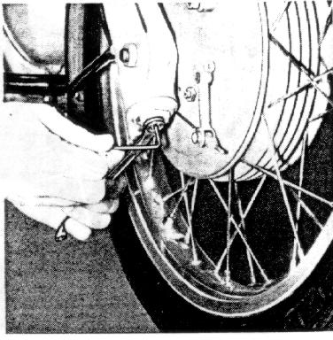
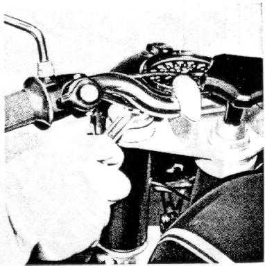

every 6000 miles, but at least once a year.
Extend telescopic fork completely with motorcycle parked on the center stand.
Remove rubber caps from the bottom plugs of the fork legs,
unscrew hex nuts (wrench size 13)
while holding the internal hex (wrench size 4) of the damper tube ends.
Figure 29
29

Unscrew cover caps on top with pin wrench (from tool kit)
to bleed the fork tubes.
Figure 30
30

Pull down both fork legs, let oil drain.
Screw in bottom nuts, fill with new oil.
Initial filling capacity 280cc per fork leg,
after draining, refill capacity 265cc.
Types of oil:
Shock absorber oil
Shell Aero Fluid 4,
Shell 4001,
Castrol BMW shock absorber oil
or
BP OLEX HL 2463 (Aero-Hydraulik).